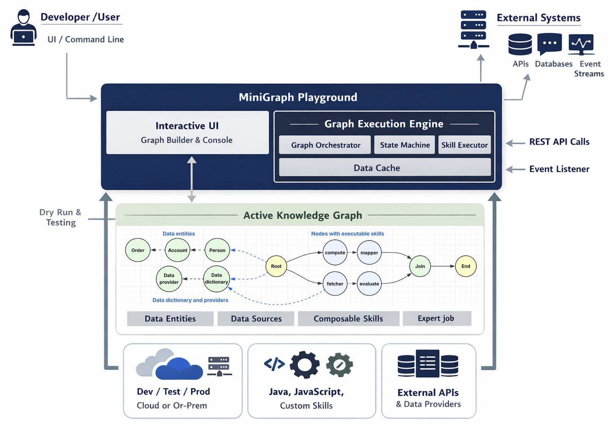

MiniGraph Playground – Executive Summary
Guide: An implementation of in-memory property graph for computation and decision-making.
Overview
MiniGraph Playground is a graph-based application modeling and execution platform designed to enable rapid development of backend services, APIs, and decision logic without writing application code.
It introduces the concept of an Active Knowledge Graph — a graph model that not only represents knowledge and relationships, but also executes behavior through embedded skills during graph traversal.
This approach allows organizations to:
- Build decision-centric and data-driven backend services
- Rapidly prototype and evolve business logic
- Decouple application behavior from traditional code deployments
What Is an Active Knowledge Graph?
Traditional property graphs model entities (nodes), relationships (edges), and attributes. MiniGraph extends this model by allowing nodes to carry executable skills.
An Active Knowledge Graph:
- Encodes business knowledge as graph structures
- Assigns executable skills to selected nodes
- Executes logic dynamically as the graph is traversed
When traversal reaches a node with a skill:
- The graph executor invokes a composable function
- Inputs are derived from node attributes and execution context
- The function returns a result
- The executor determines the next traversal path
This transforms a static knowledge graph into a living execution model.
Why This Matters
Business Impact
- Faster time-to-market: Change logic by updating graph models, not code
- Lower risk: Dry-run and inspect execution paths before deployment
- Better alignment: Business rules, data, and execution live in one model
- Scalability: Execution is backed by composable, event-driven architecture
Industry Context
MiniGraph aligns with and advances industry trends such as:
- Graph-based decision engines
- Workflow and orchestration platforms
- Event-driven and composable architectures
- Low-code / no-code backend development
Unlike traditional workflow tools, MiniGraph models both knowledge and execution in a single graph.
Built-In Capabilities
MiniGraph Playground includes built-in skills for common enterprise needs:
- Data mapping and transformation
- Mathematical and logical evaluation
- External API integration
- Cross-graph execution
- Orchestration and branching control
These capabilities allow complex backend behaviors to be composed visually and executed reliably.
Governance and Lifecycle
MiniGraph supports a structured, enterprise-grade lifecycle:
- Create graph models interactively
- Test and validate individual skills
- Perform full dry-run executions
- Certify graph behavior
- Deploy to non-production environments
- Execute functional and performance tests
- Promote models through staging
- Approve and deploy to production
Once deployed, a graph model can be invoked as a standard API endpoint or event listener.
Strategic Value
MiniGraph Playground enables organizations to:
- Externalize business logic from code
- Standardize execution patterns across teams
- Improve observability and explainability
- Build adaptable systems resilient to change
It represents a shift from application-centric development to knowledge- and execution-centric design.
Technology Review
Architecture Diagram
Figure 1 - Active Knowledge Graph

Introduction
MiniGraph Playground is a developer-focused environment for creating, testing, and executing Active Knowledge Graphs.
It provides both:
- A graph execution engine
- A self-service interactive UI
Developers use MiniGraph to model backend logic, decision flows, data access, and orchestration using graph structures and composable skills.
Core Concepts
Active Knowledge Graph
An Active Knowledge Graph is a directed graph with:
- A root node (execution entry point)
- An end node (execution completion)
- One or more nodes configured with executable skills
Traversal begins at the root and continues until the end node is reached or traversal is intentionally paused or redirected.
Node Types
MiniGraph supports three primary node categories:
1. Data Entity Nodes
Represent business entities and their attributes
Examples:
- Person
- Account
- Order
These nodes describe what the system knows.
2. Data Dictionary & Provider Nodes
Define external data sources and API contracts:
- Attribute definitions
- Endpoint configurations
- Request and response mappings
These nodes enable integration with external systems.
3. Skill Nodes (Active Nodes)
Skill nodes execute actions during traversal:
- Computation
- Decision making
- Data fetching
- Flow control
Skill nodes are the behavioral backbone of the graph.
Skills and Execution Model
A skill is implemented as a Composable Function:
- Self-contained
- Event-driven
- Stateless
- Independently deployable
During execution:
- The graph executor sends input to the skill
- The skill executes and returns a result
- The executor updates the graph state machine
- Traversal continues based on the outcome
Built-In Skills
MiniGraph includes the following built-in skills:
-
graph.data.mapper
Maps data between nodes -
graph.math
High-performance math and boolean evaluation using native Java -
graph.js
JavaScript-based expression evaluation (more flexible, slower) -
graph.api.fetcher
Invokes external APIs using data dictionary definitions -
graph.extension
Executes another graph model -
graph.island
Pauses traversal to isolated subgraphs -
graph.join
Synchronizes multiple execution paths
Each skill has its own help page with syntax, parameters, and examples.
Interactive Development Experience
MiniGraph Playground provides:
- Command prompt for graph operations
- Console output with execution details
- Visual graph rendering via
describe graph
The environment is intentionally playful and exploratory, encouraging incremental modeling and validation.
Testing and Dry-Run Execution
Developers are encouraged to:
- Execute individual skill nodes
- Inspect intermediate state machine data
- Validate traversal paths visually
A dry-run:
- Starts at the root node
- Traverses the graph using mock input
- Displays execution paths and outputs
- Requires no live system dependencies
Deployment Model
After validation:
- Graph models are deployed to cloud environments
- Each graph is exposed via a generalized API:
/api/graph/{graph-id}
Execution is decoupled from protocol using Event Script, allowing:
- REST invocation
- Event-driven execution (e.g., Kafka)
- Future protocol extensions
Help System
MiniGraph includes comprehensive built-in help pages covering:
- Node creation, editing, deletion
- Graph traversal and execution
- Import/export
- Data dictionary configuration
- Skill-specific usage
These help pages are accessible directly from the Playground UI and serve as the primary learning resource.
Extensibility
Developers can extend MiniGraph by:
- Writing new composable functions
- Registering them as custom skills
- Reusing them across multiple graph models
This enables organization-specific logic without modifying the core platform.
Summary
MiniGraph Playground enables developers to:
- Model backend logic visually
- Execute complex flows without orchestration code
- Test and validate behavior early
- Deploy production-ready graph-based services
It bridges graph modeling, event-driven execution, and composable design into a single, coherent developer experience.
| Chapter-10 | Home |
|---|---|
| Mini-Graph | Table of Contents |